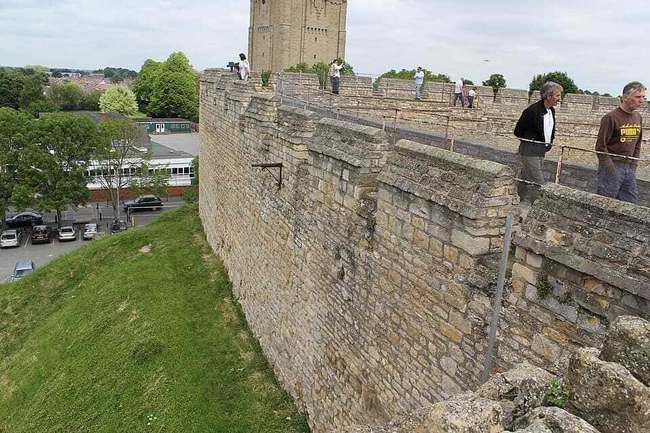

Photo: Richard Nevell, Lincoln Castle curtain wall, via Wikimedia Commons, CC BY-SA 3.0
Curtain Wall
The outer perimeter wall enclosing the castle grounds. It was built thick and tall so attackers couldn't easily breach it with battering rams or scale it quickly with ladders. It was the first physical barrier any attacking force had to get through.
Some curtain walls were built especially massive to withstand prolonged sieges. The walls at Caernarfon Castle in Wales reach over 3 metres thick in places, while Krak des Chevaliers in Syria used two complete rings of walls, so even if an attacker broke through the outer wall, a second one still stood in their way.